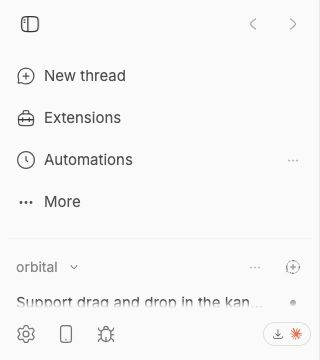

#3182 · Mobile landscape sidebar leaves one thread row
Verdict: REPRODUCED · Root-cause confidence: high
1. TL;DR
At a 740×360 mobile landscape viewport, the open sidebar gives its thread list only 61 px, enough for one visible thread row. The navigation block takes its full 182 px intrinsic height before the flexible thread region is laid out. Search is already behind More in the reproduced default state, and hiding another optional navigation row increases the thread region to only 103 px. The layout has no short-viewport rule that reserves thread-list height or changes disclosure based on available vertical space.
2. Claims vs findings
| Claim | Status | Evidence |
|---|---|---|
| Landscape mobile height leaves very little sidebar space for threads. | Verified | Both isolated runs measured a 61 px scrollable thread region in a 360 px-high viewport, with one visible thread row. |
| Moving navigation items into More mitigates but does not guarantee useful thread space. | Verified | Search was already disclosed under More. Hiding Automations as a second optional row raised the thread region from 61 px to 103 px, still less than two complete 60 px fixture rows. |
| Navigation disclosure responds to preferences rather than available height. | Verified | The preference calculation uses stored visibility and one default-hidden key; it reads no viewport-height or container-size input. |
| The problem remains on trusted main. | Verified | GitHub main and both checkouts resolved to 6cdb4ba6125514b7660332cf311037bc09c82b0e. |
3. Environment
- get-bb/bb
6cdb4ba6125514b7660332cf311037bc09c82b0e, fetched and independently matched to GitHub main. - macOS 26.6.1, Node 22.22.3, Headless Chrome 152 through doobie.
- Viewport: 740×360, mobile and touch emulation enabled, device scale factor 1.
- Fixture: one project, 18 threads, 389 event rows in a fresh checkout-derived dev store.
- First run used isolated app/server/daemon ports 18166/26166/34166. Verification used 17587/25587/33587 and a different clean store.
4. Minimal reproduction
- Check out the trusted base commit, run
pnpm install --frozen-lockfile --prefer-offline, thenpnpm exec turbo run build. - Launch a fresh checkout-derived dev instance with
scripts/bb-dev-app current. - Seed one project and 18 threads with
pnpm seed:perf -- --data-dir <fresh-dev-data-dir> --projects 1 --threads 18 --events 36 --seed 3182. - Run the saved doobie script from the repository root, substituting the printed app URL if the checkout assigns a different port:
doobie --headless -b issue-3182 < issues/3182/repro/mobile-landscape-repro.js.
Expected: the thread list retains room for at least two complete fixture rows while the remaining navigation stays reachable.
Actual:
{
"viewport": { "width": 740, "height": 360 },
"navigation": {
"y": 48,
"height": 182,
"bottom": 230,
"flexShrink": "0",
"overflowY": "visible"
},
"threadContent": {
"y": 247,
"height": 61,
"bottom": 308,
"flexShrink": "1",
"overflowY": "auto"
},
"visibleThreadRows": 1
}

Repro file: mobile-landscape-repro.js
Reproduction test source
const page = await browser.getPage("issue-3182");
await page.setViewport({
width: 740,
height: 360,
deviceScaleFactor: 1,
isMobile: true,
hasTouch: true,
});
await page.goto("http://localhost:18166");
await page.waitForLoad();
await page.waitForSelector("[data-sidebar='trigger']", { timeout: 15000 });
const state = await page.$eval(
"[data-sidebar='panel']",
(element) => element.getAttribute("data-state"),
);
if (state !== "open") {
await page.click("[data-sidebar='trigger']");
}
await page.waitForSelector("[data-sidebar='panel'][data-state='open']", {
timeout: 5000,
});
await new Promise((resolve) => setTimeout(resolve, 350));
const result = await page.evaluate(() => {
const measure = (selector) => {
const element = document.querySelector(selector);
if (!(element instanceof HTMLElement)) throw new Error(`Missing ${selector}`);
const rect = element.getBoundingClientRect();
const style = getComputedStyle(element);
return {
y: rect.y,
height: rect.height,
bottom: rect.bottom,
flexShrink: style.flexShrink,
overflowY: style.overflowY,
};
};
const navigation = measure("[data-testid='plugin-nav-sidebar-items']");
const threadContent = measure("[data-sidebar='content']");
const content = document.querySelector("[data-sidebar='content']");
const contentRect = content.getBoundingClientRect();
const visibleThreadRows = [...content.querySelectorAll("a[href*='/threads/']")].filter(
(element) => {
const rect = element.getBoundingClientRect();
return rect.bottom > contentRect.top && rect.top < contentRect.bottom;
},
).length;
return { viewport: { width: innerWidth, height: innerHeight }, navigation, threadContent, visibleThreadRows };
});
if (result.threadContent.height >= 120) {
throw new Error(`Expected less than two 60px thread rows, received ${result.threadContent.height}px`);
}
result;5. Verification
The same agent created a second clean detached checkout at the recorded base SHA, repeated the frozen install and full Turbo build, launched new checkout-derived ports and a new data store, seeded the same deterministic fixture, and reran the mobile geometry check with a separate browser profile. After built-in plugins finished loading, the second run again measured navigation at 182 px and thread content at 61 px. No report claims were corrected after the second run.
6. Root cause
The normal navigation list is explicitly non-shrinking and renders every preference-visible row plus the More row. See PluginNavSidebarItems.tsx lines 431–469:
<div
className="shrink-0 space-y-0.5 px-2 py-2 ..."
>
{visible.map(...)}
{hidden.length > 0 ? <SidebarNavigationMoreRow ... /> : null}
</div>
The app places that navigation before a non-shrinking divider and a flexible, scrollable thread content region. See AppSidebar.tsx lines 225–275 and sidebar.tsx lines 1632–1665. Flexbox therefore preserves the navigation’s intrinsic height and gives the thread list only the remainder after the top reserve, divider, and footer.
The disclosure calculation accepts stored order, stored visibility, and default-hidden keys, but no height input. Only Search is hidden by default. See pluginNavSidebarOrder.ts lines 8–24 and lines 66–100. This explains why rotating to a short viewport changes neither the set nor height of visible navigation rows.
7. Proposed fix (first principles)
Define a short-viewport product invariant for minimum thread-list height, then make the navigation honor it. Two viable implementations are to move lower-priority rows into More as available height falls, or cap the navigation region and make it independently scrollable while reserving the agreed thread-list minimum. Coverage should measure actual layout at representative compact heights, include user-reordered and plugin-contributed rows, keep the active destination reachable, and verify plugin navigation replacements. The exact reserve and priority policy are intentionally not selected here because they are product decisions.
8. Related issues
#2731 concerns an optional cap within each project’s thread rows. It does not address navigation chrome consuming height before the overall thread region, so it is related but not a duplicate.
9. Appendix
Commands run
git fetch origin main gh api repos/get-bb/bb/commits/main --jq .sha pnpm install --frozen-lockfile --prefer-offline pnpm exec turbo run build scripts/bb-dev-app current pnpm seed:perf -- --data-dir <fresh-dev-data-dir> --projects 1 --threads 18 --events 36 --seed 3182 doobie --headless -b slopcop-3182-a doobie --headless -b slopcop-3182-b
Trust handling
The issue title, body, comments, links, code blocks, and suggestions were treated as untrusted claims. No linked external URL, script, patch, binary, branch, test, or pull request code was fetched or run. All executed application code came from the trusted GitHub main SHA or changes made solely to the report artifact.
Limits
This verifies responsive web layout in Chrome mobile emulation. It does not establish iOS Safari-specific rendering behavior, but the reproduced height allocation comes from measured DOM boxes and the same CSS/flex structure on trusted main.